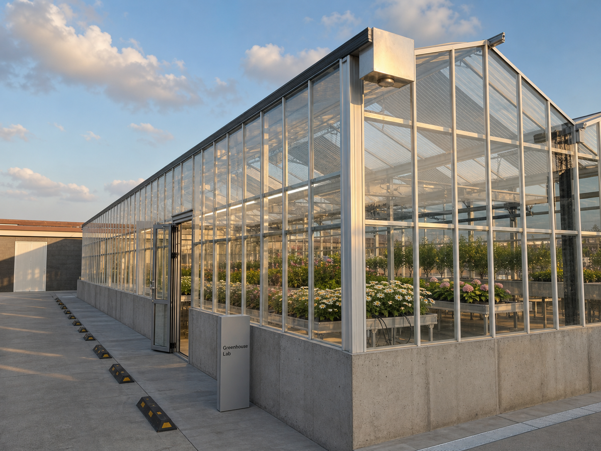
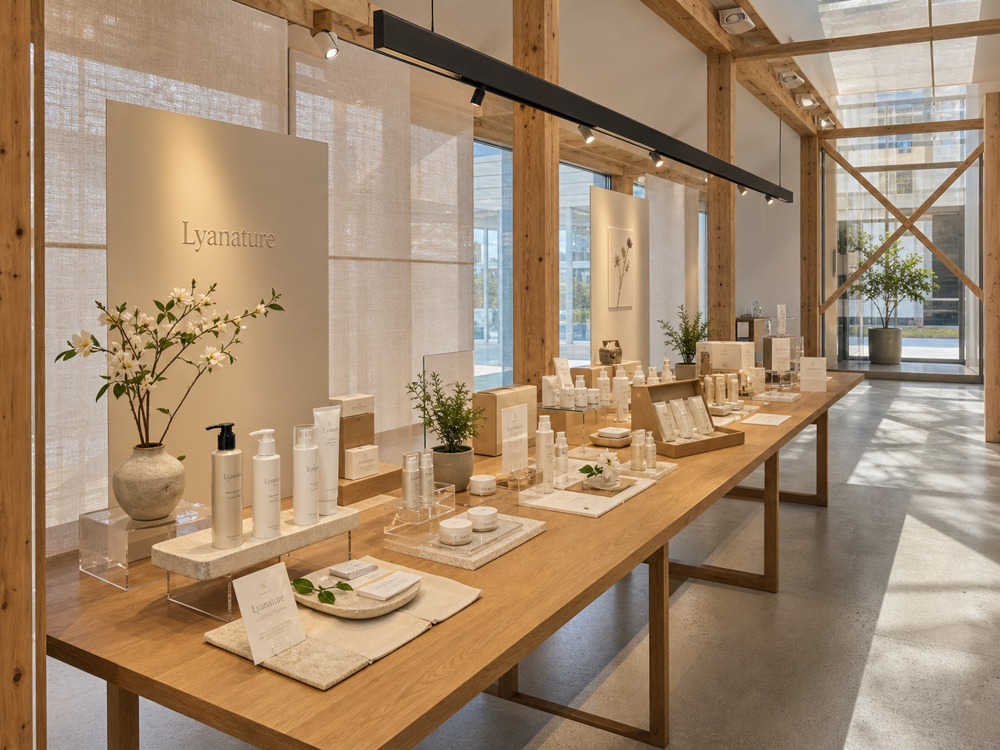

1. PROJECT R&R
프로젝트 R&R과 투자를 통해 기대하는 것들을 먼저 정리합니다.
본 미팅에서는 문호리 프로젝트를 스마트팜, 카페·판매장, 조경, 숙박·토목으로 나누어 각 주체의 역할과 투자 범위를 확인합니다. 역할과 원칙이 먼저 정리되어야 리아네이처와의 후속 협의에서도 일관된 설명이 가능합니다.
투자 목표 정리
투자금이 회사 성장과 문호리 운영 모델에 어떻게 연결되는지 정리합니다.
책임 범위 정리
스마트팜 코어와 부대 개발 영역을 구분해 각 주체의 역할을 명확히 합니다.
스마트팜 기준 정리
규모, 투자비, 체험·재배·판매 구조를 전문가 관점에서 제시합니다.
| Agenda | 논의 의미 | 회의에서 정리할 내용 |
|---|---|---|
| 투자를 통해 기대하는 것 | 회사 성장과 문호리 운영 모델이 함께 작동해야 함 | 투자금 사용 범위, 운영권, 회수 구조 정리 |
| 책임 범위 | 스마트팜과 부대 개발 영역을 구분해야 함 | 만나CEA 담당 범위와 건축주/전문 파트너 담당 범위 구분 |
| 스마트팜 규모·비용·활동 | 문호리에서 체험·재배·판매가 작동하는 최소 사업 단위 | 500평, 약 10억, 체험·재배·판매 구조 제시 |
| 카페 투자 범위 | 건물은 효율적으로 계획하고, 야외 그늘 좌석과 온실 체류를 활용 | 카페는 운영권이 보장될 때 제한적 투자 검토 |
| 리아네이처 협업 | 화장품 판매·체험 프로그램은 스마트팜과 시너지를 낼 수 있음 | 제품 판매, 브랜드 사용, 체험 프로그램, 수수료·정산 구조 분리 검토 |
2. OUR POSITION
스마트팜은 만나CEA가 책임지고, 부대 개발은 역할을 나눠 추진합니다.
30억 투자 구조를 논의할 경우, 문호리 스마트팜에는 약 10억을 사업 단위로 투입하고, 나머지는 회사 투자금으로 구분하는 기준을 검토합니다. 카페·조경·숙박·토목은 전체 경험과 연결하되, 실행 주체와 운영권 조건을 별도로 정리하는 것이 좋습니다.
스마트팜 사업 단위 확정
온실, 재배, 체험, 원료식물, 제품 판매까지 연결되는 수익형 코어를 설계합니다.
부대 개발 책임 구분
토목, 대형 건축, 숙박, 캠핑, 대규모 조경은 건축주 및 전문 파트너와 역할을 나누어 추진합니다.
3. SMART FARM STANDARD
관광농원 사업의 경제성과 제도적 요건을 함께 충족하려면, 약 500평 규모의 스마트팜 투자가 필요합니다.
문호리를 관광농원이라는 좋은 제도적 틀 안에서 추진하려면, 체험·재배·판매가 실제로 돌아가는 규모와 영농체험시설로 설명 가능한 면적이 함께 필요합니다. 따라서 약 500평 내외의 스마트팜은 비용을 키우기 위한 선택이 아니라, 사업 성립을 위한 핵심 기준입니다.
| 구분 | 논리 | 회의에서 쓸 표현 |
|---|---|---|
| 수익성 | 작게 만들면 사람은 들어와도 체험 회전, 인력 파견, 제품 판매가 충분히 돌아가지 않음 | 운영 가능한 최소 규모 |
| 인허가 | 관광농원 기본시설/영농체험시설 기준을 온실과 야외 원료식물 정원으로 함께 설명 | 제도적 기준 검토를 위한 코어 |
| 투자비 | 유리온실 건축 약 6억 + 내부 재배·공조·체험 설비 약 4억 | 실질 조성비 약 10억 |
| 협의 범위 | 실행 과정에서 10% 내외 가감은 가능하나, 사업 단위가 유지되는 범위에서 조정 | 500평 내외, 10억 내외 |
4. LAYOUT DISCUSSION
스마트팜 2동안과 3동안을 놓고, 운영성과 투자 효율을 비교합니다.
2동안은 관리·운영이 단순하고, 3동안은 체험·재배·식물 라운지 기능을 분리해 설명하기 좋습니다. 두 안 모두 약 500평 내외의 스마트팜 코어를 기준으로 검토합니다.

2동 구성: 재배·체험 중심의 단순 운영안
온실 코어를 두 개의 큰 운영 구역으로 나누어 관리 동선과 투자 규모를 단순하게 설명할 수 있습니다.

3동 구성: 체험 2동 + 식물 라운지 1동
화장품 원료 작물 체험 2동과 식물·좌석이 결합된 라운지 온실 1동으로 프로그램을 분리할 수 있습니다.
| 판단 항목 | 스마트팜 2동안 | 스마트팜 3동안 |
|---|---|---|
| 운영 | 관리 동선과 설비 계획이 단순함 | 체험·재배·휴게 기능을 구분하기 쉬움 |
| 체험 | 큰 단위의 재배·체험 설명에 적합 | 프로그램별 공간 분리와 방문 동선 설명에 유리 |
| 투자 | 건축·설비 구성이 비교적 단순 | 3개 동으로 나뉘지만 총면적은 약 500평 기준으로 조정 가능 |
| 회의 활용 | 기준 사업안 설명용 | 체험 콘텐츠 강화안 설명용 |
5. SUPPORTING PROGRAMS
카페·조경·숙박·토목은 스마트팜과 역할을 구분하되, 전체 경험이 연결되도록 조율합니다.
리아네이처와의 협업 및 문호리 전체 개발을 고려하면, 스마트팜 바깥의 부대 영역도 방문 경험과 연결되어야 합니다. 다만 각 영역의 실행 주체와 투자 범위는 구분하고, 카페와 정원은 스마트팜 체험과 연결되는 범위에서 협력 여지를 남깁니다.

스마트팜·재배·체험·운영
큰 주차장 온실을 사전 테스트베드로 삼고, 문호리 온실 체험·판매 구조를 검증합니다.

리아네이처 제품 판매·체험
위탁판매, 수수료, 영상/SNS, 체험 프로그램 기획은 스마트팜 투자 논리와 섞지 않고 별도 트랙으로 합의합니다.
| 영역 | 권장 주체 | 검토 방향 |
|---|---|---|
| 스마트팜/온실 | 만나CEA | 핵심 담당. 약 10억 기준으로 책임 범위 설정 |
| 카페/판매장 | 건축주 주도 + 만나CEA 운영권 검토 | 운영권과 회수기간 보장 시 최대 5억 범위 검토 |
| 야외 그늘 좌석 | 건축주·조경 파트너와 조율 | 투자비를 낮추면서 체류성을 높이는 방향 |
| 대규모 조경/수목 | 건축주 또는 조경 전문사 | 수익이 직접 나는 영역이 아니므로 비용 한도 설정 필요 |
| 숙박/캠핑/토목 | 건축주 또는 별도 개발 PM | 전체 마스터플랜상 필요한 범위에서 조율 참여 |
6. AGENDA
본 미팅에서는 아래 항목을 기준으로 논의 방향을 정리합니다.
아래 표는 문호리 프로젝트의 투자·운영·협업 구조를 한 자리에서 정리하기 위한 체크리스트입니다. 회의 중에는 각 항목을 “동의 / 수정 / 보류”로 표시해 다음 단계 자료에 반영합니다.